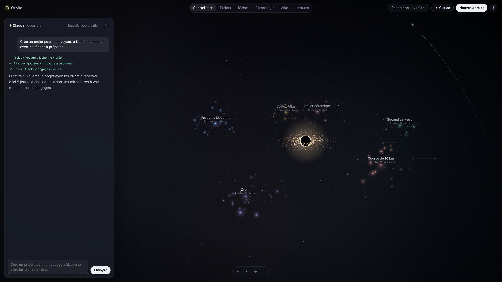
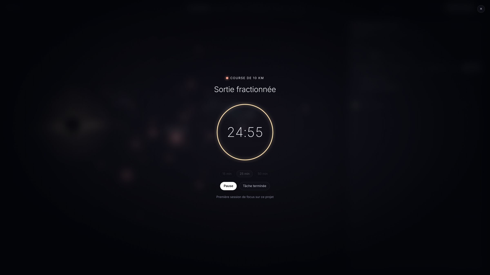
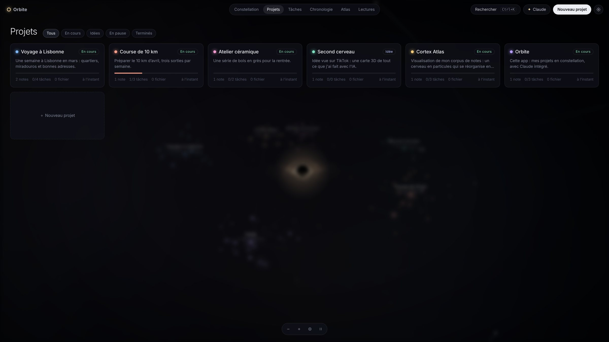

Windows
Windows 10 and 11, 64-bit
DownloadOrbite-Windows.zip · 393 KB
Orbite arranges your projects, notes and tasks in a living sky. Claude helps you move them forward, and everything stays on your computer.
Each project is a cluster of stars. The more alive it is, the brighter it shines and the closer it drifts to the center.
Active projects orbit close to the center, forgotten ones drift away and fall asleep. Related projects are joined by dotted lines.
Ask it to create a project, add tasks or write a progress note: it does it directly.
Every day: what's overdue, your three priorities, and the projects worth picking back up.
One shortcut, from any app: type an idea and it lands in the right project.
Sessions of 15 to 50 minutes, and twelve weeks of activity to see where your energy goes.
Markdown notes, linked across projects. Drop in an article or a PDF and Claude summarizes it.
Smoked-glass panels over the sky, and nothing superfluous. The app itself is currently in French.




Free. The installer downloads the official Electron engine, verifies its checksum, then lets you choose where to install the app.
Windows 10 and 11, 64-bit
DownloadApple silicon or Intel Mac
DownloadUbuntu, Kubuntu, Debian, Fedora…
Downloadbash ~/Downloads/installer-orbite.shsk-ant-. It is only shown once.No. claude.ai subscriptions (Pro, Max, Team) and the API are two separate Anthropic services. Orbite uses the API, which needs its own key and its own credit.
Orbite takes nothing: you pay Anthropic directly, per use, with no subscription. A typical request usually costs a few cents, and less with the lighter models. You can set a monthly spend limit in the Anthropic console (under Limits) so there are never surprises. Current prices are at anthropic.com/pricing.
You can switch models at any time in Settings.
Only what Claude needs, and only when you use a Claude feature: your request and the relevant project details. Without an API key, nothing leaves your computer. Orbite has no account, no ads and no analytics. Your key is encrypted with your system's keychain.
From any app, press ⌥ Space on Mac or Ctrl Alt Space on Windows and Linux. A small window opens: type your idea, confirm, and it's saved. With Claude, it is filed in the right project automatically; without Claude, it goes to the Inbox. To keep the shortcut always available, tick "Ouvrir Orbite au démarrage de l'ordinateur" (open Orbite at startup) in Settings.
Your Claude projects become Orbite projects, and each conversation becomes a note. You can import again later: nothing is duplicated.
Yes. Constellation, projects, notes, tasks, focus, timeline and quick capture all work without an API key. Claude adds automatic creation, the brief and summaries.
Download the new version here and run the installer again to the same location. The app is replaced, your projects stay untouched.
Not yet: the interface is in French for now. An English version is planned.
That's Windows 11 Smart App Control: it blocks software that isn't yet signed by a recognized publisher. You can turn it off in Windows Security → App & browser control. Be aware that on many versions of Windows it can't be turned back on without resetting Windows. A signed version of Orbite is planned.
On your computer, in Documents/Orbite: one folder per project, and each note is a plain .md file. Back it up or sync it however you like (iCloud, OneDrive, Nextcloud…).
Yes: no subscription, no ads, no hidden paid tier. Only Claude, if you turn it on, is billed by Anthropic based on your usage.
Windows: desinstaller.cmd in the install folder. Linux: desinstaller.sh in the install folder. macOS: move Orbite to the Trash. Your projects in Documents/Orbite are kept.
No. Orbite is free to use, but its code remains the property of its author. Copying, modifying and redistributing it are forbidden without written permission. The full terms are in the license (in French).